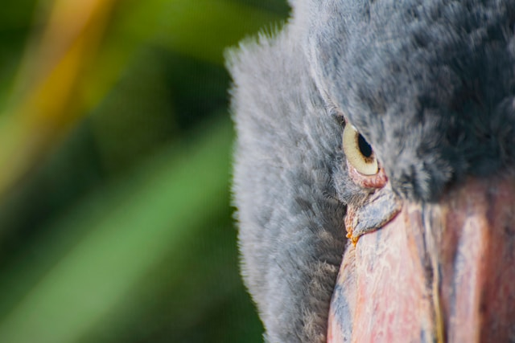

shoebill stork

What makes the aptly named shoebill so unique is its foot-long bill
that resembles a Dutch clog. Tan with brown splotches, it's five
inches wide and has sharp edges and a sharp hook on the end. Its
specialized bill allows the shoebill to grab large prey, including
lungfish, tilapia, eels, and snakes.